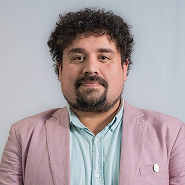
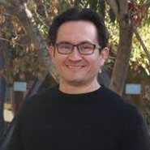
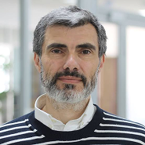
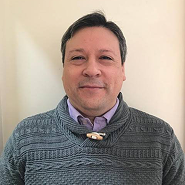
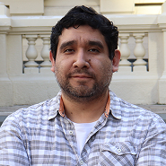
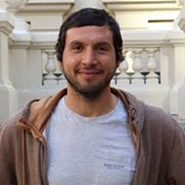
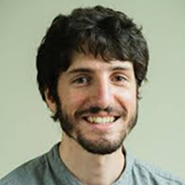

El workshop MIRO es un encuentro anual que convoca a la comunidad del
Instituto Milenio de Investigación en Óptica para compartir y discutir
los últimos avances en óptica y fotónica. Cada año se realiza en una de
las universidades que albergan al instituto y se invita a académicos de
otras universidades que realizan investigación en temas vinculados a las
áreas de investigación del centro.
Este año, el Workshop MIRO es organizado por los investigadores Stephen
Walborn, de la Universidad de Concepción, y Marcel Clerc, de la
Universidad de Chile.
Expositores

Álvaro Alarcón
Profesor asistente
Departamento de Ingeniería Eléctrica y Electrónica
Universidad del Bío-Bío
Charla:
“From the Periphery: Rethinking Quantum Technologies as Scientific, Social and Cultural Experiments”

Johan Triana
Profesor asistente
Departamento de Física Universidad Católica del Norte
Charla: “Light-Driven the quantum nature of light”

Darío Pérez
Profesor titular
Instituto de Física Pontificia Universidad Católica de Valparaíso
Charla: “Direct testing of turbulence statistics with kilohertz
complex-field reconstruction”

Mauricio Morel
Profesor asociado
Departamento de Química y Biología, Facultad de Ciencias Naturales Universidad
de Atacama
Charla: “Light- and heat-actuated films based on chiral nematic
liquid crystals”

Diego Guzmán
Profesor asistente
Departamento de Física, Facultad de Ciencias Universidad de Chile
Charla: Observation of Aharonov-Bohm caging and Fano resonances in optical lattices

Bastián Real
Profesor asistente
Departamento de Física Universidad Técnica Federico Santa María
Charla: Directional control through coherent driving in Hermitian and non-Hermitian photonic lattices

Cristóbal Lledó
Investigador posdoctoral
Departamento de Física, Facultad de Ciencias Físicas y Matemáticas Universidad
de Chile
Charla: “Cat qubits in circuit QED”
Programa
08:45 - 09:00Opening
09:00 - 09:30Cat qubits in circuit QEDCristóbal Lledó
09:30 - 09:45Implementation of a Photoconductive-Antenna-Based THz Time-Domain Spectroscopy Platform for Nonlinear Materials StudiesJoaquín Toloza
09:45 - 10:00Construction of a 3-Km classical communication link between Cerro Calán Observatory and Universidad de Los AndesKei Sawada
10:00 - 10:15Construction of bipartite density matrices with bound entanglement using deep learning toolsDaniel Uzcategui
11:15 - 11:30Certifying Wigner non-classicality at a single phase-space pointDaniel Concha
11:30 - 11:45Bath-induced resonant deviations from quantum Gibbs statistics of strongly interacting oscillatorsFelipe Recabal
11:45 - 12:00Physics-Informed Neural Networks for Experimental Validation of Self-Organization in Chiral Liquid CrystalsMartin Rubio
12:00 - 13:30Lunch Break
13:30 - 14:00Experimental Investigation of Phase and Energy Fluctuations in a Mid-Infrared Multimode OPABirger Seifert
14:00 - 14:30Poster Preview
14:30 - 15:00Coffee Break
15:00 - 16:30Poster Session
09:00 - 09:30Light-Driven the quantum nature of lightJohan Triana
09:30 - 09:45Scalable realization of quantum Fourier transform interferometers for boson sampling certificationEdgar Barriga
09:45 - 10:00Thermo-orientation-Induced Complex Structures in Nematic Liquid CrystalsLuciano Toro
10:00 - 10:15Hybrid Atomistic-Parametric Decoherence Model for Molecular Spin QubitsKaty Aruachan
10:15 - 10:45Coffee Break
10:45 - 11:15PendienteStephen Walborn
11:15 - 11:30Influence of cobalt and nickel metal ions on the optical properties of doped carbon dots for future applications as peroxidase-like nanozymes.Eloísa Pérez